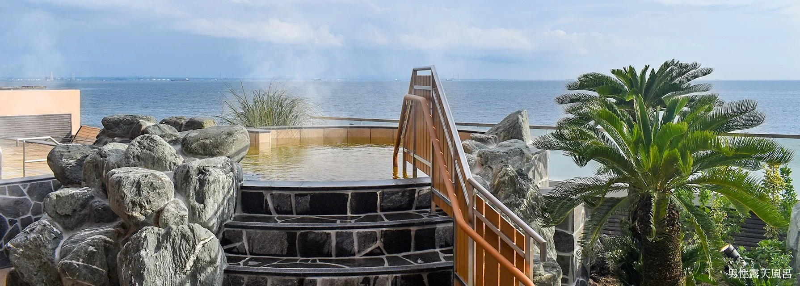

01 / SUNSET夕日を、
夕日を、
見送る。
海に伸びる桟橋で、空と海が
ゆっくり染まっていく時間を。
The SUNSET Pier / INAGE2027 02.05FRI—02.07SUN
A little longer.
心が動いたショーのあと。
そのまま帰るには、まだ少し惜しいから。
海に伸びる桟橋で、空の色が変わるのを待つ。
焚き火を囲み、おいしい夕食を楽しむ。
夜は植物と光の世界へ。温泉で、ひと息つく。
そして翌朝も、海のそばで。
いつものクルマが、週末の小さな拠点になる。
稲泊サンセットは、そんな1泊2日です。
夕暮れから、夜へ。
稲毛で過ごす、4つの楽しみ。



写真は各施設のイメージです。焚き火の実施条件、ミュージアムの夜間入館、温泉入浴券の利用条件・移動方法は、予約受付時にご案内します。
SUNSET → FIRE → LIGHT → RELAXショーも、公園も、夜の楽しみも。
好きな時間をつないで、あなたらしい週末に。
駐車スペースの利用は11時から翌10時まで。受付方法を確認して、今日の滞在をスタート。
JCCSへ。キャンピングカーを見て、旅のアイデアを集めて。ランチは会場などで自由に楽しむ時間に。
昼食は宿泊プランに含まれません。公園へ戻ったら、桟橋や砂浜へ。写真を撮ったり、ただ海を眺めたり。日没までのひとときを味わって。
薪のぬくもりを感じながら、一日の出来事を話す時間。焚き火の場所・道具・利用時間は、当日の案内をご確認ください。
食事付きの宿泊プランだから、夕食も旅の楽しみのひとつ。提供時間に合わせて、おいしいひと休みを。
植物と光がつくる、昼間とは違う世界へ。夜間入館の条件に合わせて、自由に立ち寄る時間に。
冬季の通常夜間営業：17:00〜22:00／最終入館21:30。湯楽の里でくつろいだら、公園の宿泊スペースへ。温泉への往復は、受付開始時に案内する移動方法をご確認ください。
予定を詰めすぎず、
「何もしない」も、旅の楽しみ。
 園内施設のイメージ / BOTANICA MUSEUM
園内施設のイメージ / BOTANICA MUSEUM彩り豊かな朝食を楽しんで、一日をゆっくり始める。朝食の提供時刻は、宿泊のご案内でお知らせします。
白い砂浜を歩いたり、園内の緑を眺めたり。前の日とは違う、朝の公園を楽しんで。
駐車スペースは翌10時まで。出発後にJCCSへ向かうなど、次の予定はお好みで。
愛犬とのドッグランや周辺への立ち寄りも。
施設の営業・利用条件に合わせて楽しもう。
宿泊プランは、朝食・夕食付き。
食事も一緒に楽しむ、海辺の滞在。
 朝食
朝食色とりどりの野菜で、朝をさわやかに。
海辺で迎える一日に、彩りを添えて。
 夕食
夕食夜の楽しみは、ホットサンド。
のんびり過ごす時間に、おいしいひと休み。
料理画像はイメージです。提供方法・時刻、お子さまの食事、連泊時の提供回数・内容は、予約案内とあわせてお知らせします。
海辺の滞在と、食事と、チケットと。
週末を楽しむためのプランです。
駐車スペース利用料11:00〜翌10:00
JCCSチケット2枚
ボタニカミュージアムチケット2枚／夜間利用条件は後日ご案内
会場間のバス送迎JCCS会場「幕張メッセ」↔稲毛海浜公園
朝食・夕食BOTANICA監修ガーデンサラダ／OHANA BATAKE HOT SAND
焚き火用の薪場所・道具・利用時間は後日ご案内
ドッグラン無料利用権利用規約に沿ってお楽しみください
湯楽の里入浴券もプランへの組み込みに向けて調整中です。対象人数、利用日、送迎などの条件は、確定後にご案内します。
滞在する稲毛海浜公園から、
JCCS、温泉へ。昼も夜も、思いのままに。
受付場所・入退場経路・送迎時刻、宿泊エリアの指定可否は、受付開始時にご案内します。
JCCSは2月5〜8日開催。5日は11:00〜17:00、
6・7日は10:00〜17:00、8日は10:00〜16:00。
市民感謝デーは原則第2・第4土曜日で、2月6日（土）は通常の対象日ではありません。市場や店舗の当日営業を確認のうえ、旅の寄り道としてお楽しみください。
予約はまもなく受付開始予定です。販売開始日・予約先・早割期間は決まり次第このページに掲載します。現在、このページでは申込や決済を受け付けていません。
車両の種類・サイズ、区画、電源などの設備条件は、予約受付時のご案内でお知らせします。宿泊場所の指定可否についても、詳細をご確認のうえお申し込みください。
宿泊プランは高校生以下無料とご案内しています。お子さま分の食事、施設チケット、追加人数に関する条件は、受付開始時にお知らせします。
BOTANICA MUSEUMは通常、冬季17:00〜22:00（最終入館21:30）の夜間営業があります。ただし宿泊プランのチケットでの夜間入館条件は調整中です。温泉入浴券の内容と夜間の往復方法も、確定後にご案内します。
宿泊プランにはドッグラン無料利用権を含みます。宿泊時のペット同伴条件やドッグランの利用規約は、予約案内をご確認ください。ミュージアムなど各施設の同伴条件はそれぞれ異なります。
開催判断・キャンセル・人数変更・返金についての詳細は、予約受付開始前にご案内します。
変更・中止時のご案内へINAHAKU SUNSET 2027
2027.02.05 FRI — 02.07 SUN / 稲毛海浜公園23,100円（税込）